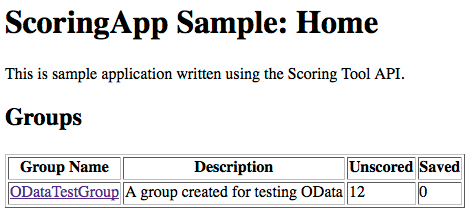
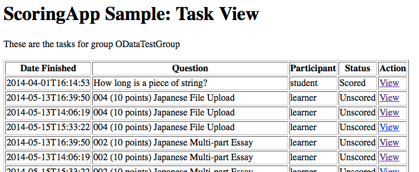
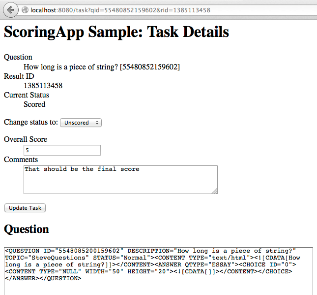
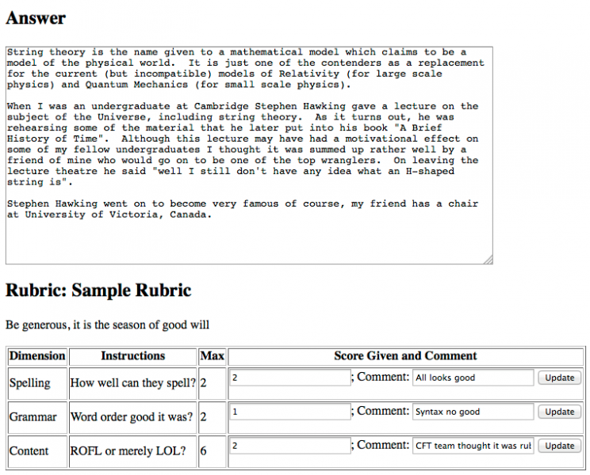
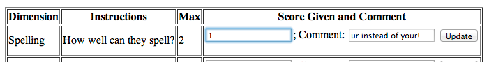
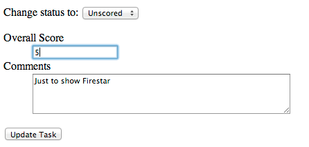

Subjective Scoring¶
One application of this API is the integration of external scoring tools and scoring workflows with Questionmark software.
This scenario requires that the rubrics for an assessment be created and associated with Questions using the existing Scoring Tool available through Enterprise Manager.
A rubric is a set of instructions to a scorer, including a maximum score to award for a response (which must always match the maximum score of the question assigned to it). The rubric is broken down into various dimensions; individual facets of the rubric score that can be set and commented on separately by the scorer. The overall score for the participant’s response is obtained by adding up the scores for the individual dimensions.
The existing Scoring Tool uses a locking feature to prevent two scorers from marking the same question at the same time. This mechanism is not modeled directly in the API which uses a simpler system of optimistic concurrency control to manage simultaneous access. The same workflow states are however made available to external tools allowing them to emulate this behaviour if desired. It is assumed that an external tool will have its own workflow rules that are mapped on to the limited set of status values defined here.
ScoringTasks and ScoringResults¶
The work done by scorers is managed through two main feeds. The
workflow starts when the participant submits their assessment and the
delivery system finalises a result containing unscored (subjectively
marked) responses. At this point, the delivery system creates a
deliveryodata.ScoringTask entity for each unscored answer.
The purpose of the ScoringTask entity is to manage the workflow, the only writable property is the Status property which reflects the current position within the workflow:
0 Unscored - the initial state
- 1 Locked - an optional state that prevents scorers using the
- builtin Scoring Tool in Enterprise Manager to score this response.
- 2 Saved - an optional state that indicates that a score has been
- set but that it is awaiting moderation or review
- 3 Scored - the final state, the response has been scored and
- the participant’s result has been updated to reflect the new value.
The scores themselves are set in the corresponding ScoringResult. Each ScoringTask has a corresponding ScoringResult (created automatically, see below). You set the scores using the ScoringResult entity and then, when you have finished, you change the status of the ScoringTask to indicate the new position within the workflow.
There are no limits placed on the workflow transitions but bear in mind that the participant’s result is only updated when the ScoringTask is set to the Scored status from one of the other states. If you modify the ScoringResult when the task is in the Scored state it will not affect the participant’s result until you change the status to one of the other states and then back to Scored again to finalise the task.
Recommended Workflow¶
In the examples below, a fictional customer ID of 12345 is used, the HTTP scheme and host are omitted for brevity and %-escapes have been removed from URLs for legibility. Where appropriate, examples are also given using Microsoft’s LINQ example code.
First step¶
Monitor the deliveryodata.ScoringTasks feed for new tasks
with an unscored status. This can be done by filtering the feed:
/deliveryodata/12345/ScoringTasks?$filter=Status eq 0&$orderby=Result/WhenFinished desc
LINQ:
var scoringTasks = context.ScoringTasks.Where(x => x.Status == 0).OrderByDescending(x => x.Result.WhenFinished);
It is recommended that a combination of expansion and additional filters is used to reduce the feed to a manageable size so that most sorting can be carried out in the external application. For example, you can filter by group, participant, and/or assessment (see below for an example) as well as expand the result to obtain a reasonably-sized collection for local sorting.
Second step¶
When someone takes on a scoring task using an external scoring tool, update the status of the ScoringTask to indicate that it’s in progress. To locate the appropriate rubric and trigger the creation of the associated ScoringResult, follow links from the ScoringTask.
Warning
do not expand ScoringResult when accessing ScoringTasks.
ScoringResults are created automatically when they are
retrieved from the associated ScoringTask’s navigation
property directly from the ScoringTask’s URL. See
deliveryodata.ScoringTask.ScoringResult for
more information.
Although a ScoringTask will never have more than one associated ScoringResult the multiplicity of the relationship is defined as being 1-to-Many. This is a limitation of the technology used to expose the API rather than a limitation of OData itself. When obtaining the ScoringResult from a ScoringTask, you will receive a collection rather than a single entity. If this collection is empty it indicates that there is no rubric associated with the question and scoring cannot proceed.
Third step¶
As the scoring task progresses, update the DimensionScores linked from the ScoringResult, and update the result itself with information about the total score awarded and any comments or other feedback.
Fourth step¶
Once complete, set the status of the ScoringTask to indicate that marking is now complete using status value 3 (Scored). At this point, the delivery system will update the participant’s result information (as visible in reports) with the updated value taken from the ScoringResult.
An external tool may provide for a more complex workflow (such as moderation or approval of grades) prior to the ScoringTask being updated to indicate that scoring is complete.
Resolving conflicts¶
It is possible that a ScoringResult will be retrieved from the OData feed, updated, and then processed through a time-consuming workflow by an external scoring tool before being sent back to the Questionmark repository. If, in this time, the ScoringResult has been updated by another user, then this could cause unexpected loss of data. To prevent this, optimistic concurrency control based on the last modified date and time of the ScoringResult is used.
When the updated ScoringResult is PUT back to the repository, the last modified date should be set to (or simply left as) the value received when the score was last retrieved by the external tool. This is compared to the date of the current revision, and if there is a mismatch, then the entry is not updated and an error is returned (one of the HTTP 4xx codes). It is up to the client how it handles this, but it can of course retrieve the latest ScoringResult and allow the user to compare their changes or trigger a new conflict resolution workflow in the external tool.
Sample Application¶
On this screen, a list of groups is shown to the end user. The underlying OData request was:
GET /deliveryodata/12345/Groups HTTP/1.1
LINQ:
var groups = context.Groups
The totals in the table were calculated using three additional requests (unscored being the sum of states 0 and 1):
GET /deliveryodata/12345/ScoringTasks/$count?$filter=Group/Name eq 'ODataTestGroup' and Status eq 0 HTTP/1.1
GET /deliveryodata/12345/ScoringTasks/$count?$filter=Group/Name eq 'ODataTestGroup' and Status eq 1 HTTP/1.1
GET /deliveryodata/12345/ScoringTasks/$count?$filter=Group/Name eq 'ODataTestGroup' and Status eq 2 HTTP/1.1
Unfortunately, LINQ does not support the Count() method when the data source is OData, so a more direct method of executing the queries is required.
LINQ:
var saved = context.Execute<long>(new Uri("ScoringTasks/$count?$filter=Group/Name eq 'ODataTestGroup' and Status eq 2", UriKind.Relative)).FirstOrDefault();
var unscored = context.Execute<long>(new Uri("ScoringTasks/$count?$filter=Group/Name eq 'ODataTestGroup' and (Status eq 0 or Status eq 1)", UriKind.Relative)).FirstOrDefault();
Clicking on the group name takes you to a list of ScoringTasks filtered by the group in question.
The underlying OData request was:
GET /deliveryodata/12345/ScoringTasks?$expand=Question,Result&$filter=Group/Name eq 'ODataTestGroup' HTTP/1.1
LINQ:
var scoringTasks = context.ScoringTasks.Expand(x => x.Question).Expand(x => x.Result).Where(x => x.Group.Name == 'ODataTestGroup');
The question description is read from the Question and the participant name from the Result objects that are included in the expanded response.
Clicking on the View link takes you to the detailed view of the task itself, with forms for updating the scores. Notice that the question ID and result ID are passed as query parameters. These are used to access the specific ScoringTask.
The above picture shows only the top half of this view in the sample application. It uses a number of OData requests to obtain the information displayed (the rest of the view is shown below).
Firstly, the application uses the question and result identifiers to load the ScoringTask:
GET /deliveryodata/12345/ScoringTasks(QuestionID=55480852159602L,ResultID=1385113458)?$expand=Answer,Question HTTP/1.1
LINQ:
var scoringTasks = context.ScoringTasks.Expand(x => x.Answer).Expand(x => x.Question).Where(x => x.QuestionID == 55480852159602 && x.ResultID == 1385113458);
The second request is used to load the ScoringResult (as it cannot be expanded):
GET /deliveryodata/12345/ScoringTasks(QuestionID=55480852159602L,ResultID=1385113458)/ScoringResult HTTP/1.1
LINQ:
var scoringResult = context.ScoringTasks.Where(x => x.QuestionID == 55480852159602 && x.ResultID == 1385113458).SelectMany(t => t.ScoringResult).SingleOrDefault();
When using LINQ, you must obtain the ScoringResult from the ScoringTask as shown above, as this triggers the beginning of the scoring workflow. An unexpected Null result typically indicates that no Rubric has been assigned to the Question (assuming the Where expression correctly identifies an existing ScoringTask).
Recall that this returns a collection of ScoringResults that will have at most one member.
The next part of the screen displays the QML from the associated Question (expanded in the first call). The QML is implemented as a media resource and the Question entity acts as a media-link entry. The application probes first, to check the QML is present, and then requests it in full:
HEAD /deliveryodata/12345/Questions(55480852159602L)/$value HTTP/1.1
GET /deliveryodata/12345/Questions(55480852159602L)/$value HTTP/1.1
The second half of the screen is shown below:
To show the answer the application uses the same technique, first probing the API to check the media type of the answer data and then obtaining the full text. In this case, the answer is just of type text/plain, but the API supports the scoring of other answer types. If the answer stream is of an image type an <img> tag is used to display it instead (a separate handler in the application proxies the resource to the browser—in this case, the second call is only made when the browser attempts to load the image):
HEAD /deliveryodata/12345/Answers(QuestionID=55480852159602L,ResultID=1385113458,Occurrence=1,BlockNumber=1)/$value HTTP/1.1
GET /deliveryodata/12345/Answers(QuestionID=55480852159602L,ResultID=1385113458,Occurrence=1,BlockNumber=1)/$value HTTP/1.1
The rubric is loaded by navigating from the Question entity:
GET /deliveryodata/12345/Questions(55480852159602L)/Rubric(1102098584)
LINQ:
var rubric = context.Questions.Where(x => x.QuestionID == 55480852159602).SelectMany(x => x.Rubric).SingleOrDefault();
Note that SelectMany is required in LINQ even though (at most) a single Rubric will be linked.
Finally, the dimension scores, including the rubric for each dimension, are loaded from the ScoringResult:
GET /deliveryodata/12345/ScoringResults(QuestionID=55480852159602L,RubricID=1102098584,ResultID=1385113458)/DimensionScores?$expand=Dimension
LINQ:
var dimensionScores = context.ScoringResults.Where(x => x.QuestionID == 55480852159602 && x.RubricID == 1102098584 && x.ResultID == 1385113458).SelectMany(x => x.DimensionScores).Expand(x => x.Dimension).ToList();
This is a complex example showing how an application must make multiple queries in some cases to get all the information required.
At this point, we can edit the individual dimension scores using the forms embedded in the table rows...
The form passes the question and result IDs and the “Order” value that identifies this dimension as hidden form variables in addition to the editable values shown. The form that handles the POST makes the following queries (the second query has been wrapped for display):
GET /deliveryodata/12345/ScoringTasks(QuestionID=55480852159602L,ResultID=1385113458)?$expand=ScoringResult
GET /deliveryodata/12345/ScoringResults(QuestionID=55480852159602L,RubricID=1102098584,ResultID=1385113458)/
DimensionScores(QuestionID=55480852159602L,RubricID=1102098584,ResultID=1385113458,Order=1)
LINQ:
var scoringTask = context.ScoringTasks.Where(x => x.QuestionID == 55480852159602 && x.ResultID == 1385113458).Expand(x => x.ScoringResult).Single()
var dimensionScore = context.DimensionScores.Where(x => x.QuestionID == 55480852159602 && x.RubricID == 1102098584 && x.ResultID == 1385113458 && x.Order == 1).Single();
The application then modifies the DimensionScore and issues a PUT request to update the database:
PUT /deliveryodata/12345/DimensionScores(QuestionID=55480852159602L,RubricID=1102098584,ResultID=1385113458,Order=1)
LINQ:
dimensionScore.Score = 1;
dimensionScore.Comment = 'ur instead of your!';
context.UpdateObject(dimensionScore);
context.SaveChanges(SaveChangesOptions.ReplaceOnUpdate);
For LINQ users, continuing from the previous example, note that we use ReplaceOnUpdate when saving changes. This forces the use of PUT instead of PATCH/MERGE semantics. The methods supported by each feed differ and are documented in Delivery OData Feeds. The scoring feeds support PUT but do not support PATCH.
When you are happy that the scores are correct you can update the ScoringResult itself with overall comments and an updated score. The following form also allows you to set the status value of the ScoringTask.
When this form is submitted it makes the following OData query:
GET /deliveryodata/12345/ScoringTasks(QuestionID=55480852159602L,ResultID=1385113458)?$expand=ScoringResult
...and to update the ScoringResult with the new values for the Score and Comments properties:
PUT /deliveryodata/12345/ScoringResults(QuestionID=55480852159602L,RubricID=1102098584,ResultID=1385113458)
If the task status has been changed, then this would be updated with a similar PUT request to the ScoringTask.